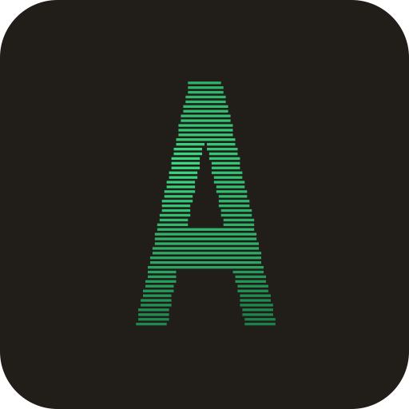
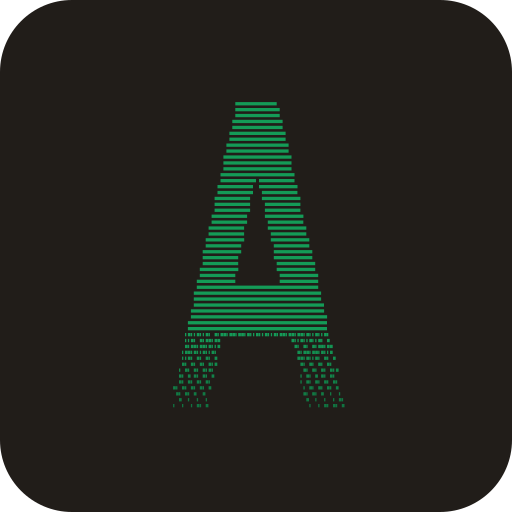
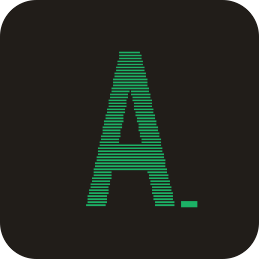

1 · currentflat scanlines + glow

2 · beamthe orb's light, in scanlines

3 · dissolvetype scattering into cells

4 · cursorblinking block cursor (animated)

5 · sweeplight band refresh (animated)

6 · resolverows settle on load (animated)